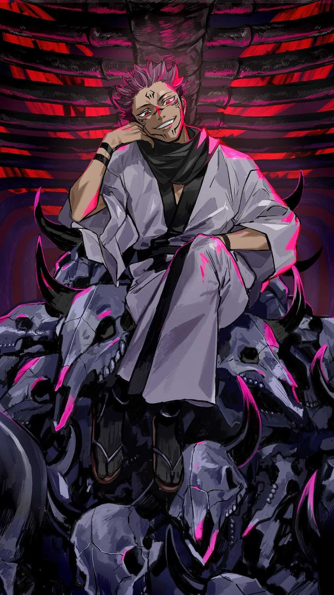

Nobara Kugisaki
Nobara Kugisaki es un personaje ficticio de la franquicia de anime y manga Jujutsu Kaisen, creado por Gege Akutami. Siendo la tritagonista de la serie, Nobara es una estudiante de hechicería de la escuela de magia de Tokio, bajo la tutela de Satoru Gojō.
Ver Más

Ryomen Sukuna
Ryomen Sukuna es un personaje central y el principal antagonista de la serie Jujutsu Kaisen. Conocido como el "Rey de las Maldiciones", Sukuna es una poderosa entidad maligna con una enorme fuerza y habilidades místicas.
Ver MásSatoru Gojo
Satoru Gojo es un hechicero de jujutsu excepcionalmente poderoso y el mentor de Yuji Itadori y sus amigos. Conocido por su inmenso poder, Gojo es considerado el hechicero más fuerte de la era moderna.
Ver Más